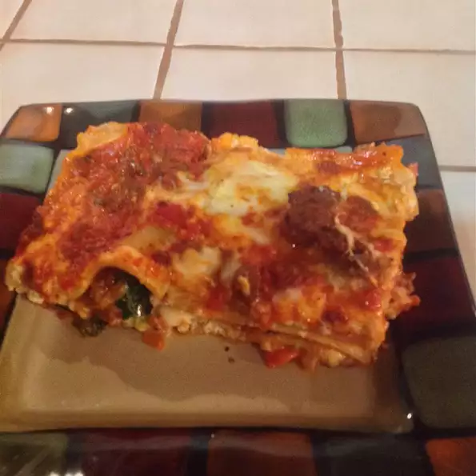

Lesagne

A lasagna with some time-saving steps that is still yummy.
2 teaspoons minced garlic
1 (26 ounce) jar spaghetti sauce
1 (12 ounce) container cottage cheese
1 ½ teaspoons ground black pepper
1 (10 ounce) package frozen chopped spinach, thawed and drained
1 (8 ounce) package shredded mozzarella cheese
½ cup grated Parmesan cheese
Step 1
Crumble beef and garlic into a 2-quart microwave-safe bowl. Heat in microwave on high until beef is no longer pink, about 6 minutes. Stir and drain beef. Add spaghetti sauce and water.
Step 2
Combine cottage cheese, eggs, and black pepper in another bowl.
Step 3
Spread about 1/2 cup meat mixture in the bottom of a 9x13-inch baking dish. Arrange half the lasagna noodles over sauce and spread with cottage cheese mixture. Top cottage cheese mixture with half the spinach, half the meat sauce, and half the mozzarella cheese; repeat each layer.
Step 4
Cover baking dish with heavy-duty plastic wrap and heat in microwave on high for 8 minutes. Continue to heat in microwave on medium until noodles are tender and cheese is melted, 30 to 32 minutes, turning dish occasionally. Sprinkle with Parmesan cheese and allow lasagna to rest for 15 minutes before slicing and serving.